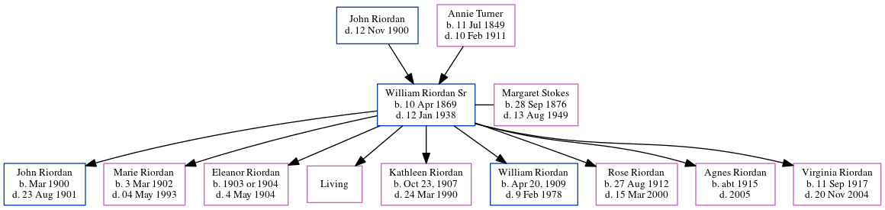

William Joseph Riordan Sr 1869 - 1938
[ Home ] | [ Calendar ] | [ Surnames Index ] | [ Family History ]The child of John Riordan (a prominent cotton buyer/brpler) and Annie Turner, William Riordan, the great-grandfather of Michele Copp (née Phillips), was born in Atlanta, , Georgia, USA on Apr 10, 18691,2,3,4,5,6,7,8,9,10 and married Margaret Stokes (with whom he had 9 children: John A, Marie Louise, Eleanor Josephine, Margaret Ann, Kathleen Cecilia, William Joseph, Rose Theresa, Agnes Elise and Virginia Rita Mae, along with 1 surviving child) in Atlanta, Fulton, Georgia, USA on May 31, 189912 (Fr Shadwell, Immaculate Conception Church).
During his life, he was living in Atlanta in 18801; in Black Hall, Fulton, Georgia in 19002; in Atlanta, Georgia, USA in 190313; in Atlanta Ward 3, Fulton, Georgia in 19103 and in 19204; in Atlanta in 192314; in Atlanta, Fulton, Georgia in 19305; and in Atlanta8.
He died on Jan 12, 1938 in Atlanta6,7,8,9,10,11.
Parents
- John was born c. 29 Jun 1840
- Annie R was born on Jul 11, 1849
Children
- John A was born in Mar 1900
- Marie Louise was born on Mar 3, 1902
- Eleanor Josephine was born on Jan 1, 1903
- Kathleen Cecilia was born in Oct 23, 1907
- William Joseph was born in Apr 20, 1909
- Rose Theresa was born on Aug 27, 1912
- Agnes Elise was born c. 1915
- Virginia Rita Mae was born on Sep 11, 1917
Citations
- 1880 United States Federal Census Online publication - Provo, UT, USA: The Generations Network, Inc., 2005. 1880 U.S. Census Index provided by The Church of Jesus Christ of Latter-day Saints © Copyright 1999 Intellectual Reserve, Inc. All rights reserved. All use is subject to the limite
- 1900 United States Federal Census Online publication - Provo, UT, USA: MyFamily.com, Inc., 2004.Original data - United States of America, Bureau of the Census. Twelfth Census of the United States, 1900. Washington, D.C.: National Archives and Records Administration, 1900. T623, 1854 rolls.
- 1910 United States Federal Census Online publication - Provo, UT, USA: The Generations Network, Inc., 2006. For details on the contents of the film numbers, visit the following NARA web page: NARA.Original data - United States of America, Bureau of the Census. Thirteenth Census of the Unit
- 1920 United States Federal Census Online publication - Provo, UT, USA: MyFamily.com, Inc., 2005. For details on the contents of the film numbers, visit the following NARA web page: NARA. Note: Enumeration Districts 819-839 on roll 323 (Chicago City.Original data - United States of America
- 1930 United States Federal Census Online publication - Provo, UT, USA: MyFamily.com, Inc., 2002.Original data - United States of America, Bureau of the Census. Fifteenth Census of the United States, 1930. Washington, D.C.: National Archives and Records Administration, 1930. T626, 2,667 rol
- Georgia, Deaths Index, 1914-1940 Ancestry.com Operations, Inc.
- Global, Find A Grave Index for Burials at Sea and other Select Burial Locations, 1300s-Current Ancestry.com Operations, Inc.
- Newspapers.com Obituary Index, 1800s-current Ancestry.com Operations Inc
- OneWorldTree Online publication - Provo, UT, USA: MyFamily.com, Inc.
- U.S., Find A Grave Index, 1600s-Current Ancestry.com Operations, Inc.
- Georgia Deaths, 1919-98 Online publication - Provo, UT, USA: The Generations Network, Inc., 2001.Original data - State of Georgia. Indexes of Vital Records for Georgia: Deaths, 1919-1998. Gerogia, USA: Georgia Heatlh Department, Office of Vital Records, 1998.Original data: State
- Georgia, Marriage Records From Select Counties, 1828-1978 Ancestry.com Operations, Inc.
- U.S., City Directories, 1822-1995 Ancestry.com Operations, Inc. (Original sources vary according to directory. The title of the specific directory being viewed is listed at the top of the image viewer page. Check the directory title page image for full title and publication information.)
- U.S., City Directories, 1822-1995 Ancestry.com Operations, Inc. (Original sources vary according to directory. The title of the specific directory being viewed is listed at the top of the image viewer page. Check the directory title page image for full title and publication information.)
Family Tree
Generated by ged2site. Last updated on Jun 16, 2024